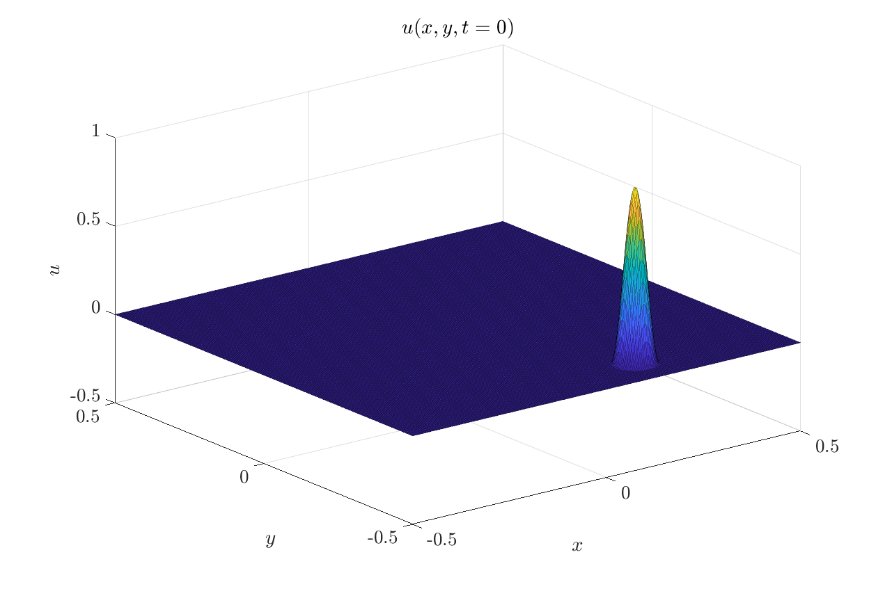
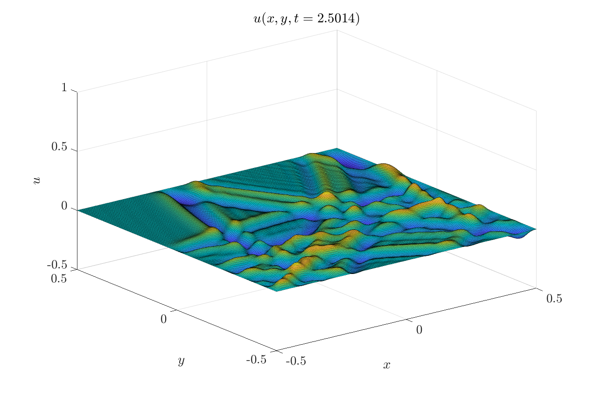

Contents
CFL = 0.2;
T = 2.5;
tplot = 0.01;
videoFileName = 'simulation_video.mp4';
frameRate = 30;
Case 2
N = 256;
L = 1;
c = 1;
dx = L/N;
dy = L/N;
x = dx*(-N/2:N/2);
y = dy*(-N/2:N/2);
[X, Y] = meshgrid(x, y);
xc = 0.15;
yc = -0.4;
R = 0.05;
r = sqrt((X-xc).^2 + (Y-yc).^2);
u = zeros(size(X));
u(r<R) = 0.5*(1 + cos(pi*r(r<R)/R));
v = zeros(size(X));
i = 2:N;
j = 2:N;
d2udt2 = @(u, v) wave(u, v, i, j, dx*dx, dy*dy, c*c);
fig = figure('Color', 'w', 'Position', [2360 90 1271 847]);
waveplot = surf(X, Y, u, 'EdgeAlpha', 0.3);
axis([-0.5,0.5,-0.5,0.5,-0.5,1])
xlabel("$x$", 'Interpreter', 'latex', 'FontSize', 20)
ylabel("$y$", 'Interpreter', 'latex', 'FontSize', 20)
zlabel("$u$", 'Interpreter', 'latex', 'FontSize', 20);
ttle = title("$u(x,y,t = " + 0 + ")$", 'Interpreter', 'latex', 'FontSize', 20);
ax = gca; ax.TickLabelInterpreter = "latex"; ax.FontSize = 20;
vWriter = VideoWriter(videoFileName, 'MPEG-4');
vWriter.FrameRate = frameRate;
open(vWriter);
nt = ceil(tplot/(CFL*(dx+dy)/c));
dt = tplot/nt;
U_case2 = Simulate(d2udt2, u, v, dt, T, @(u, t) plotfun(u, t, waveplot, ttle), nt, vWriter);
close(vWriter);

functions to be called
function [U, V] = Simulate(d2udt2, u0, v0, dt, T, plthndle, nt, vWriter)
t = 0;
u = u0;
v = v0;
U = u;
V = v;
ntcount = 0;
while (t < T)
[u, v] = rk4(d2udt2, u, v, dt);
U = cat(3, U, u);
V = cat(3, V, v);
t = t + dt;
plthndle(u, t);
ntcount = ntcount + 1;
if(mod(ntcount, nt) == 0)
saveFrameToVideo(vWriter, gcf);
end
end
end
function saveFrameToVideo(vWriter, fig)
frame = getframe(fig);
writeVideo(vWriter, frame);
end
function plotfun(u, t, plt, txt)
plt.ZData = u;
txt.String = "$u(x,y,t = " + t + ")$";
drawnow;
end
function [du, dv] = wave(u, v, i, j, dx2, dy2, c2)
du = zeros(size(u));
dv = zeros(size(v));
du(i, j) = v(i, j);
d2udx2 = (u(i-1, j) - 2*u(i, j) + u(i+1, j))/dx2;
d2udy2 = (u(i, j-1) - 2*u(i, j) + u(i, j+1))/dy2;
dv(i, j) = c2*(d2udx2 + d2udy2);
end
function [u, v] = rk4(dydt, u, v, dt)
function [ku, kv] = Kfun(u, v)
[du, dv] = dydt(u, v);
ku = du*dt; kv = dv*dt;
end
[k1u, k1v] = Kfun(u, v);
[k2u, k2v] = Kfun(u + 0.5*k1u, v + 0.5*k1v);
[k3u, k3v] = Kfun(u + 0.5*k2u, v + 0.5*k2v);
[k4u, k4v] = Kfun(u + k3u, v + k3v);
u = u + (k1u + 2*k2u + 2*k3u + k4u)/6;
v = v + (k1v + 2*k2v + 2*k3v + k4v)/6;
end
Warning: The video's width and height has been padded to be a multiple of two as
required by the H.264 codec.
